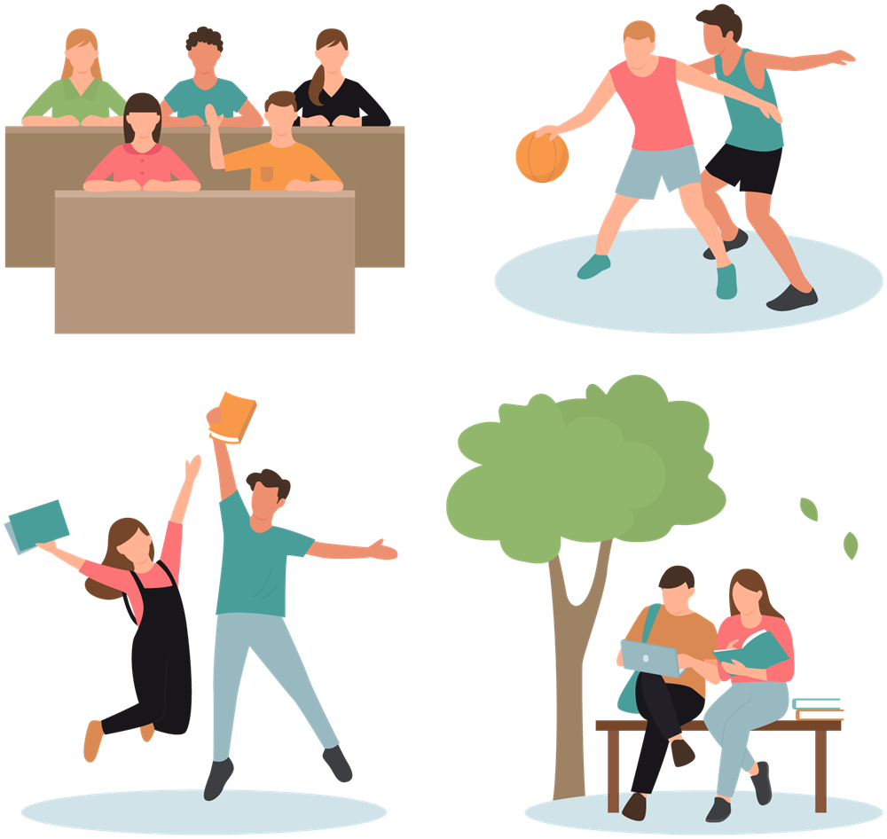

A Day on Campus大学生の1日を
大学生の1日を
のぞいてみる。

9:00
1限・講義
専門科目の講義。大教室で100名以上が受講することも。
12:30
昼休み
学生食堂やカフェで友人とランチ。
13:00
ゼミ
少人数で発表やディスカッション。
16:30
サークル
運動系・文化系など、興味に合わせて活動。
19:00
自習・アルバイト
図書館で課題に取り組む日も。
※時間割は一例です。学部・学年によって大きく異なります。
Student Life授業の外にも、
授業の外にも、
出会いがある。
サークル・部活動
運動系から文化系、ボランティアまで。学部や学年を越えた仲間ができます。
図書館・ラーニングコモンズ
自習やグループ学習に使えるスペース。試験前は多くの学生でにぎわいます。
学園祭
企画から運営まで学生が中心となってつくる、年に一度の大イベントです。
留学・国際交流
留学生との交流イベントや、海外の協定校への留学プログラムがあります。
Facilities学びと暮らしを
学びと暮らしを
支える施設。
Open Campusまずは、
まずは、
キャンパスへ行ってみよう。
来場型2027.0X.XX（サンプル）
オープンキャンパス
模擬授業や学部説明、キャンパスツアーを通じて大学の雰囲気を体感できます。
申し込むオンライン2027.0X.XX（サンプル）
オンライン入試説明会
入試制度や出願のポイントを、自宅から気軽に確認できます。
申し込む個別随時受付（サンプル）
キャンパス見学・個別相談
ご都合に合わせて、キャンパス見学や進学相談を承ります。
申し込む当日のプログラム（例）
模擬授業学部説明会入試説明会キャンパスツアー個別相談在学生トーク学生食堂体験